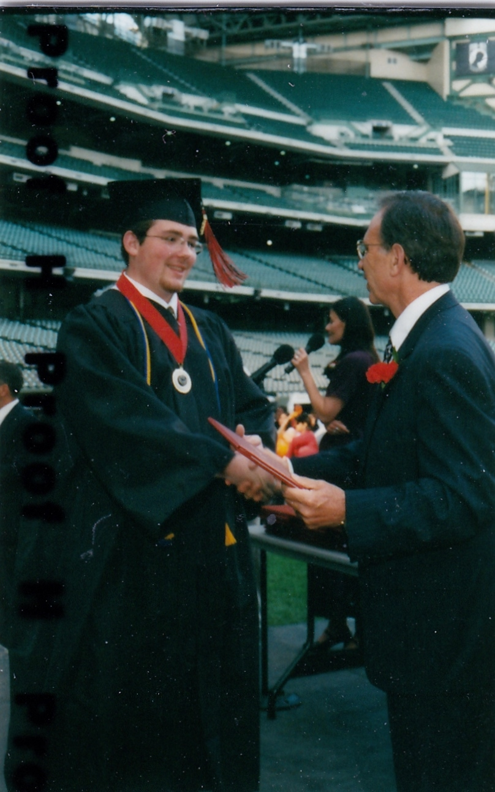

I began attending Bay View High in 1999. I played freshman football as a starting offensive lineman. However, because of changing interests, I only played for one season. Although, I can proudly say that we were undefeated conference champions that year!
I was a part of the Math/Science Specialty program, which at the time, was one of the finest high school programs throughout all of Milwaukee Public Schools. I studied and passed, with no less than a "B," classes in advanced algebra, geometry, trigonometry, and applied mathematics. I graduated with Math/Science honors.
I graduated in the spring of 2003.
